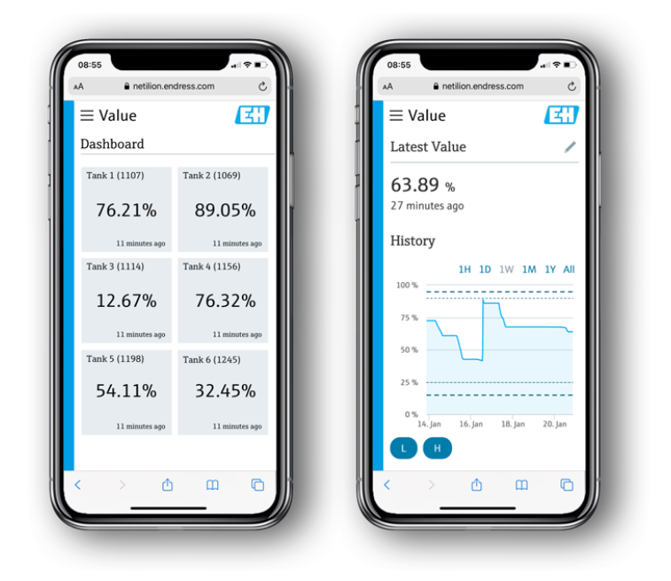

Sistema de Monitoramento IoT para Indústria
Implementação de sensores IoT para monitoramento em tempo real de máquinas e otimização de processos de produção, gerando insights acionáveis para otimização da produção, manutenção preditiva e redução de custos.
Visão Geral do Projeto
Este projeto envolveu o desenvolvimento e implementação de um sistema robusto de monitoramento baseado em IoT para otimizar operações em ambientes industriais. Nosso objetivo foi fornecer aos clientes uma visão em tempo real do desempenho de suas máquinas, identificar gargalos e prever falhas para reduzir o tempo de inatividade e os custos de manutenção.
Utilizamos uma rede de sensores inteligentes conectados a uma plataforma centralizada, capaz de coletar dados de diversas fontes, como temperatura, vibração, consumo de energia e status operacional. Os dados são processados e visualizados através de um painel intuitivo, acessível via web e dispositivos móveis.
Resultados e Impacto
A implementação deste sistema resultou em uma melhoria significativa na eficiência operacional dos nossos clientes. Registramos uma redução de 20% no tempo de inatividade não planejado das máquinas e um aumento de 15% na eficiência energética. A capacidade de realizar manutenção preditiva também levou a uma diminuição de 25% nos custos de manutenção corretiva.
A interface do usuário é um dos pontos fortes, oferecendo gráficos claros e alertas configuráveis que permitem às equipes agir proativamente. O sistema provou ser escalável e adaptável a diferentes tipos de máquinas e linhas de produção.
Tecnologias Utilizadas
- Sensores IoT personalizados e de prateleira
- Plataforma de nuvem (AWS IoT Core, Azure IoT Hub)
- Bancos de dados NoSQL para dados de séries temporais
- Frameworks de desenvolvimento web (React, Node.js)
- Integração com sistemas ERP existentes
Desafios Superados
Um dos principais desafios foi a integração com a infraestrutura legada dos clientes, que muitas vezes não possuía conectividade moderna. Desenvolvemos soluções de gateway flexíveis para garantir a compatibilidade. Além disso, a segurança dos dados foi uma prioridade máxima, implementando criptografia de ponta a ponta e autenticação robusta para proteger as informações sensíveis da indústria.